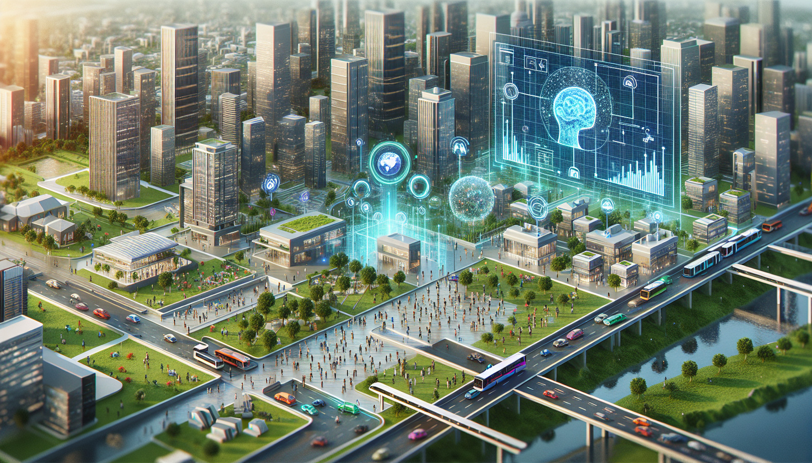

Artificial Intelligence (AI) is rapidly transforming nearly every facet of human life — from healthcare and transportation to finance and communication — raising profound questions about how we build, deploy, and regulate these systems. While AI offers tremendous potential to augment human capabilities and solve complex problems, it also brings risks, ethical dilemmas, and societal challenges. In this page, I will present a brief introduction to AI ethics, followed by focused sections on the history of AI, its benefits, risks, strategies to mitigate harm, future prospects, and broader considerations of ethics in technology.
-
History of AI

Creator: NevilleHobson
The concept of intelligent machines dates back centuries, with early philosophical thought about “thinking mechanisms,” but modern AI research began in the mid-20th century. Over time, the field has evolved from symbolic logic and rule-based systems to machine learning and deep neural networks. Alongside this evolution, scholars and technologists also began reflecting on ethical implications. For example, Isaac Asimov’s fictional “Three Laws of Robotics” introduced early ideas about moral constraints on artificial agents.
-
Benefits of AI

Creator: LeewayHertz
When responsibly developed, AI can bring many positive benefits. It can automate repetitive tasks, thereby reducing human error and increasing efficiency. For example, AI systems can assist in medical diagnosis, optimize supply chains, and improve energy management. Additionally, AI has the capacity to analyze large datasets to uncover insights humans might miss, leading to innovations in science, environmental management, and personalized services. By amplifying human intelligence, it has the potential to help societies flourish — so long as its goals remain aligned with human values.
-
Risks of AI

Creator: Blog el ABC
Alongside its promise, AI also poses several serious risks. One key issue is algorithmic bias: if the data used to train an AI system reflects social prejudices, the AI may replicate and amplify those biases. Another risk is lack of transparency, sometimes called the “black box” problem, where it is hard to understand or explain how a model arrives at a decision. Other dangers include privacy violations, misuse of AI for malicious ends (e.g. deepfakes, surveillance), job displacement, and even the long-term possibility of misaligned superintelligent systems.
-
Strategies for AI
Creator: SINT.es
Artificial intelligence, when used responsibly, can become a powerful ally in everyday life by making tasks easier, optimizing time, and providing practical solutions in areas such as education, healthcare, work, and entertainment. For example, it can help people access information faster, personalize services, or even support complex decision-making. However, it is equally important to remain aware of the risks it carries, such as potential loss of privacy, excessive dependence on technology, or the misuse of data. Therefore, the true value of artificial intelligence lies in finding a balance between taking advantage of its benefits and setting clear limits to ensure ethical and safe use.
-
Future of AI

Creator: CEPRAM
The future of artificial intelligence holds great promise as a tool to support people in their daily lives, improving the way we learn, work, and communicate by offering faster and more efficient solutions to complex problems. It could play a key role in fields such as medicine, transportation, and education, making many tasks more accessible and safer. However, it is also essential to recognize the risks it brings, such as potential job loss due to automation, the misuse of personal data, or the creation of systems that operate without proper ethical oversight. Therefore, thinking about the future of artificial intelligence means not only envisioning its benefits but also working on regulations and guidelines that ensure its development is responsible and safe.
-
Ethics in Technology

Creator: GACETA UNAM
Technology ethics is a broader field that encompasses not only AI but also issues related to data privacy, cybersecurity, digital rights, and the impact of emerging technologies on society. It asks how technologies should be designed, deployed, and regulated to ensure fairness, accountability, and respect for human dignity. Considering technology ethics alongside AI ethics allows us to see the bigger picture of how innovation interacts with social values and responsibilities.